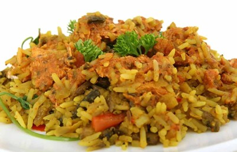

Arroz Llanero
Región Orinoquía · Los Llanos
El arroz llanero se cocina con rabo de res y otros cortes de carne que aportan al plato sabores intensos y jugosos. En este plato se puede ver reflejada la creatividad de los llaneros para aprovechar cada parte del animal y los recursos de su entorno.
El rabo de res era considerado un corte humilde, y gracias a este plato típico se transformó en el protagonista de la mesa. La técnica de cocinarlo junto con el arroz lo convirtió en un plato cotidiano y representativo de la identidad regional. (Ocampo López, J. 2006).
Ingredientes
- Rabo de res y otros cortes
- Arroz de grano largo
- Cebolla larga y ajo
- Cilantro y comino
- Sal y pimienta al gusto
Identidad llanera
Los llanos orientales tienen una cultura gastronómica propia, marcada por la abundancia de ganado y los vastos recursos naturales. El arroz llanero es la expresión más cotidiana de esa identidad.
Con qué se sirve
- Yuca cocida o frita
- Plátano maduro
- Ensalada de tomate y cebolla
- Ají llanero picante